CHARACTER DESIGN LAB
골렘 최종안
어인 후보 10안
골렘은 5번 사암 수도자를 기준으로 더 선하고 믿음직한 얼굴로 확정했습니다. 어인족은 첨부 이미지의 비늘·지느러미·푸른 피부를 현재 애니메이션 톤으로 재해석했습니다.
어인족 지도자로 마음에 드는 번호를 알려주세요.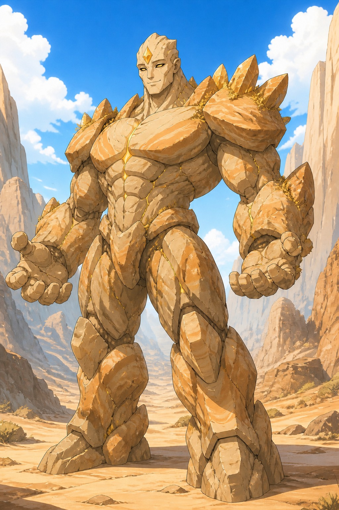
SELECTED · 05
사암 수도자
최종안
강하지만 먼저 손을 내미는 지도자거대한 사암 체형과 황금 소울스톤은 유지하고, 눈매와 입꼬리를 부드럽게 다듬었습니다. 귀엽거나 약한 인상이 아니라 공동체가 믿고 따를 수 있는 수호자입니다.MERFOLK · SELECT ONE
어인족 지도자
후보 10안
모두 매력적인 사람형 얼굴, 푸른 피부, 비늘과 지느러미 귀, 이마의 소울스톤을 공유합니다. 이미지를 누르면 크게 볼 수 있습니다.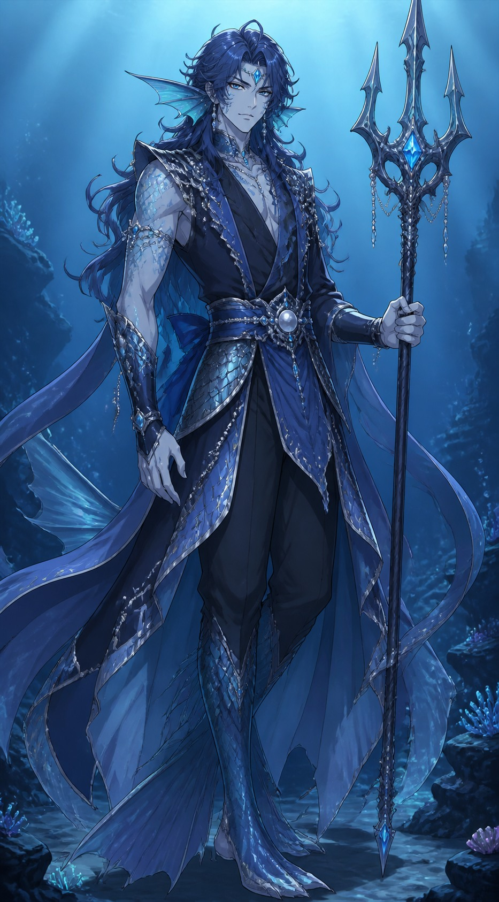
01심해 파수꾼첨부 이미지와 가장 가까운 정통 지도자형
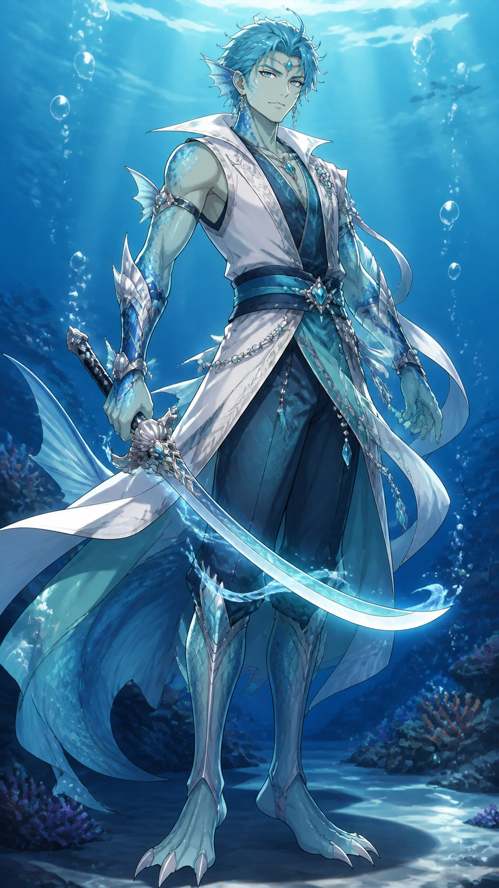
02해류 검사가볍고 빠른 해안 전투형
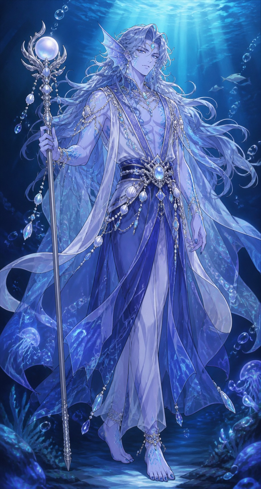
03진주 예언자신비롭고 지적인 의식 지도자형
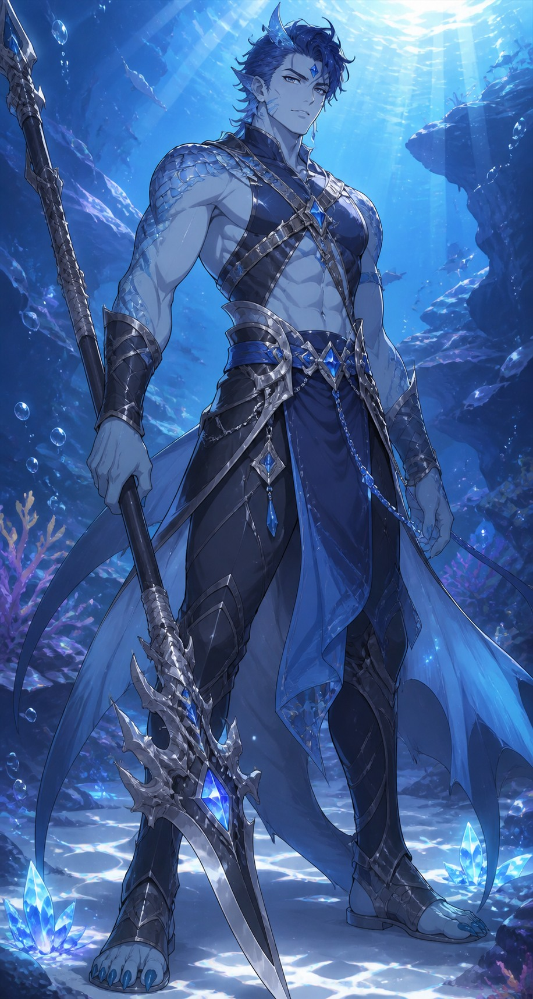
04상어 혈통 지휘관강한 체격의 최전선 대장형
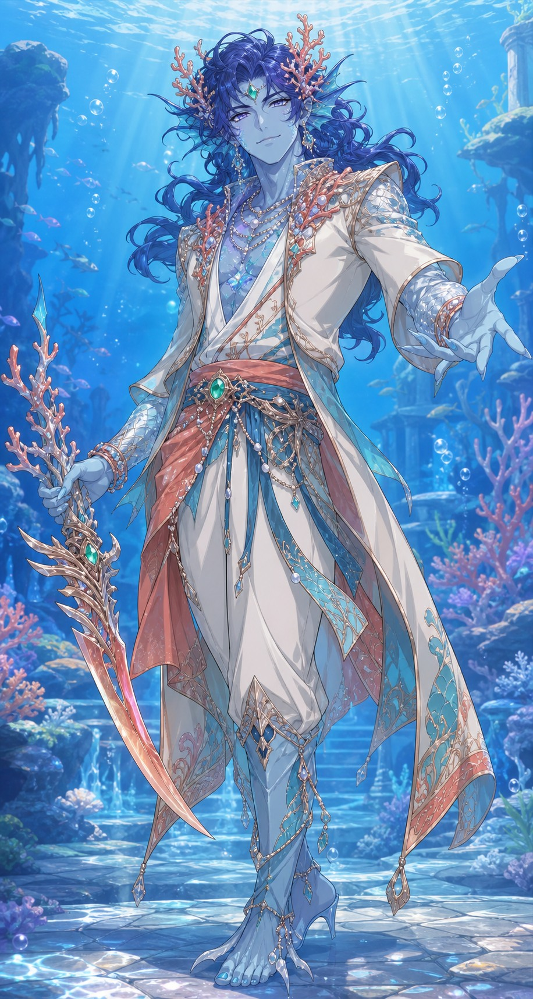
05산호 왕자화려하고 친근한 외교 지도자형
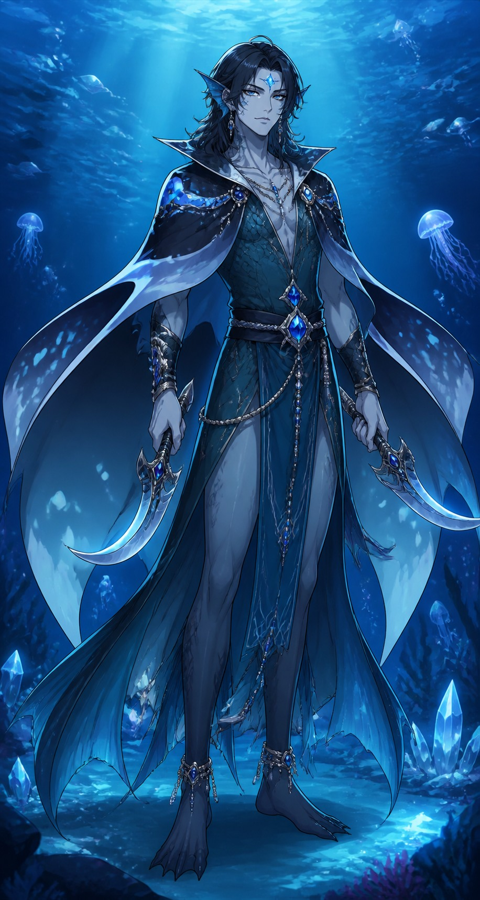
06가오리 수호자조용하고 우아한 쌍검 수호자형
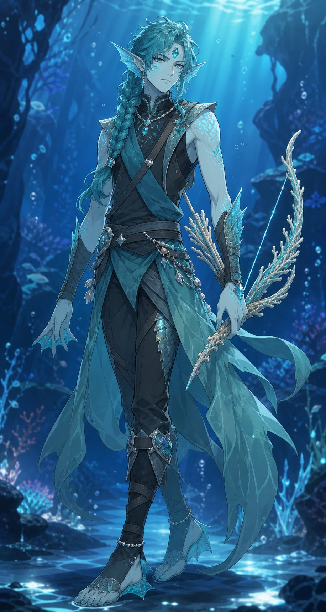
07발광 정찰대장구조와 탐색에 강한 기동형
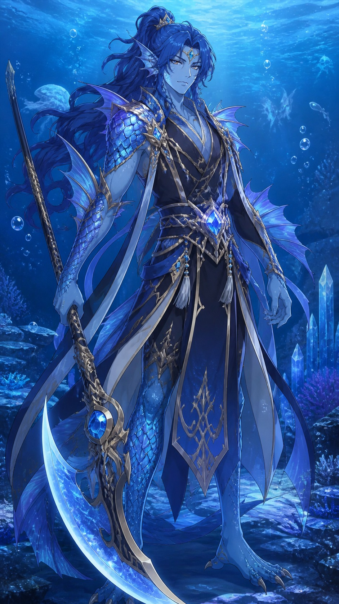
08해룡 장군최종전 존재감이 강한 군사 지도자형
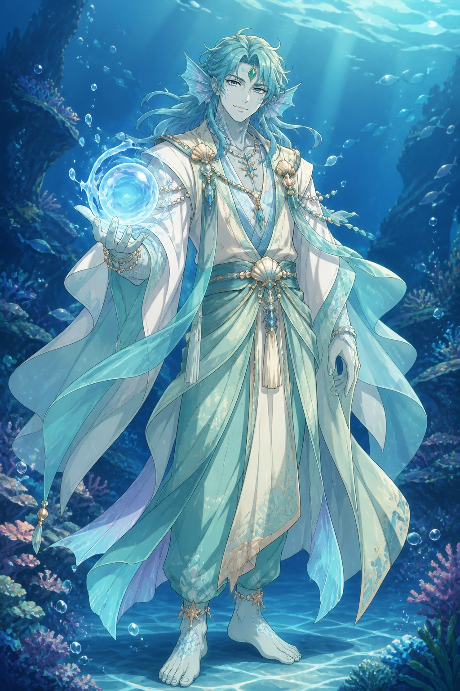
09산호초 치유자생명 보호를 앞세운 온화한 지도자형
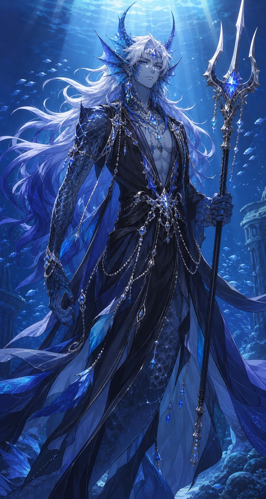
10심연 군주가장 강하고 장엄한 최고 지도자형